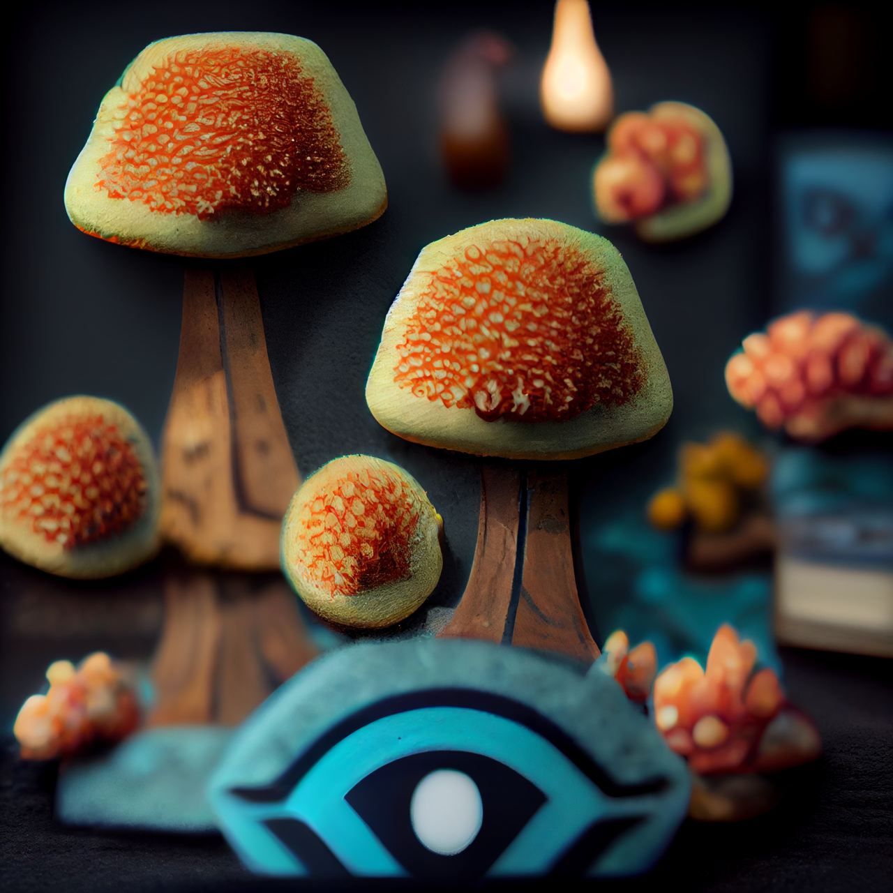
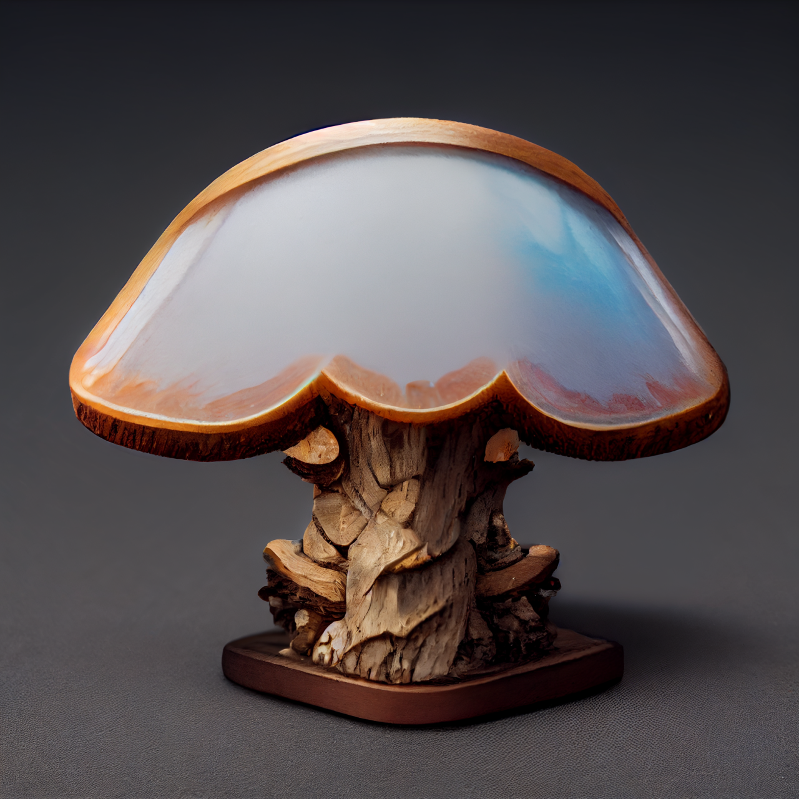

Mushroom
> Art done by Midjourney - Prompt: Mushroom






⦿ Insight ⦿
By entering the prompt: Mushroom, into the AI Midjourney bot, Midjourney produces these beautiful images of mushrooms. When taking a look at the images AI created, the mushrooms all have a unique texture and style. And it is fascinating to see that AI can make these mushrooms into the mysterious and dreamy atmosphere.